Table of Contents
1 Why linux

- Ubunutu like distro
- Ubuntu easy to use
- Free
- Easy to use
- Lots of support
- Ubuntu easy to use
- Why is linux a good choice for servers
- Free and Open Source (FOSS)
- Flexible
- You can install only the software you need
- Has lots of software that can be used to run a webserver
- Apache
- NGNIX
- Security
- Because Linux is open source, it can be independanty audited for exploits and valunerabilities, and has a large community that can fix any issues that are found
2 Virtual Machine
- VM ware is Virtual Machine Software
- we can run a mini computer in the virtual box
- This computer has a lot of the functionality of a real computer
- We can also
- Quickly destroy a Virtual Machine
- Restore a virtual machine to an earlier point
- Run multiple Virtual Machines at the same time
- Because of these reasons, virtual machines are used for running servers, with a good enough machine running hundres of machines at once
3 Getting ready
- Before we do the workshop you will need to do two things
3.1 VMware
- If you are using an x86 system (windows or intel mac) You can download VMware from here
- if you are using Linux you can get vmware from the package vmware-workstation using your package manager
3.2 Ubuntu 20.04 LTS
- For this workshop we will be using Ubuntu Desktop 20.04 LTS, however instructions should be the same for any other Ubuntu based Linux distro
- You can download the Ubuntu 20.04 LTS iso from here
4 Setting Up VMware
- When you first setup VMware, this screen will show up 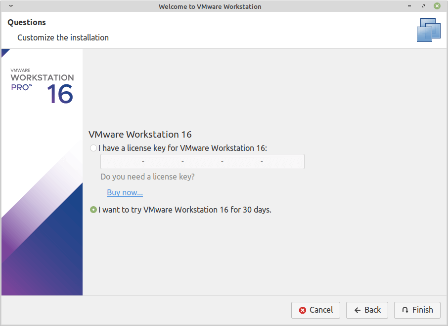
- Luckily we are not going to be using VMWare for long so just select I want to try VMWare for 30 days and you'll see this screen 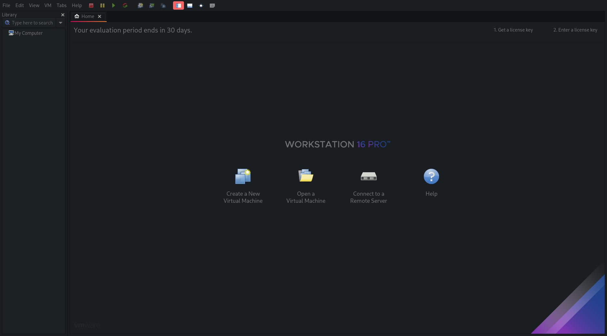
- From here we can start our own virtual machine
- Click on create new Virtual Machine and Typical configuration
- Select the Ubuntu ISO we downloaded
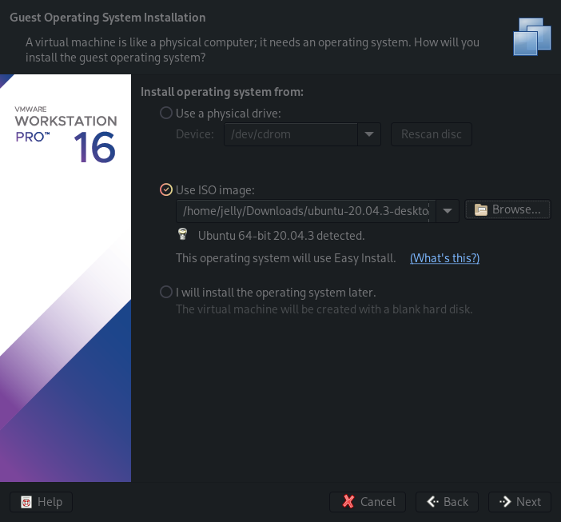
- Enter in details to login to the machine, for the sake of demonstration I'm going with isaactpc, feel free to use any username and password you can remember
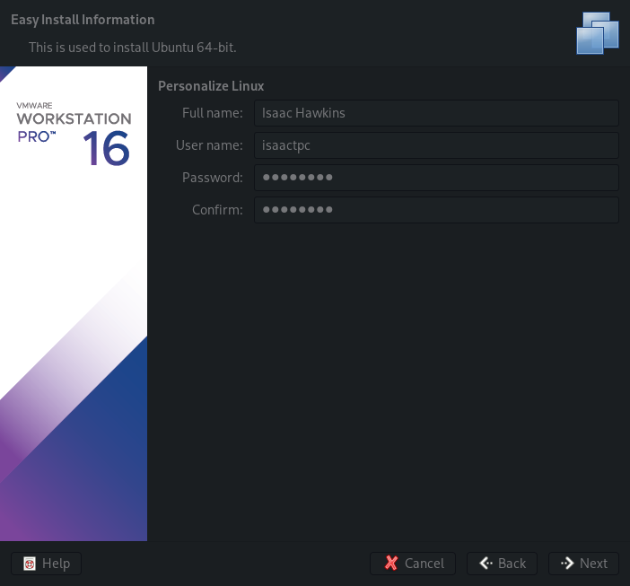
- If you have the space go with the default capacity, please let me know if you do not have the disk space
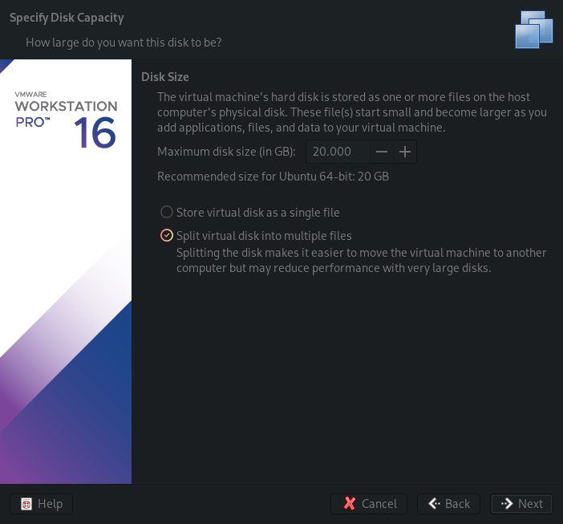
- Confirm your configuration and we can finish the final steps to setup the virtual machine
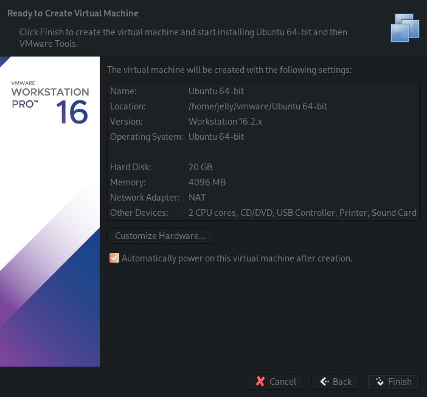
- VMWare will start the machine and you should see this screen
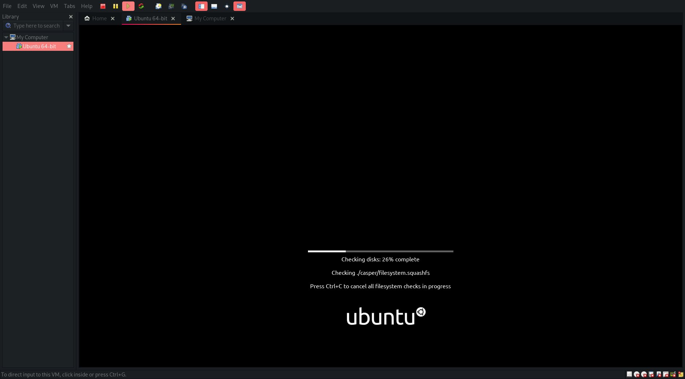
- Eventually a UI will show up and let us know that Ubuntu is configuring for this hardware
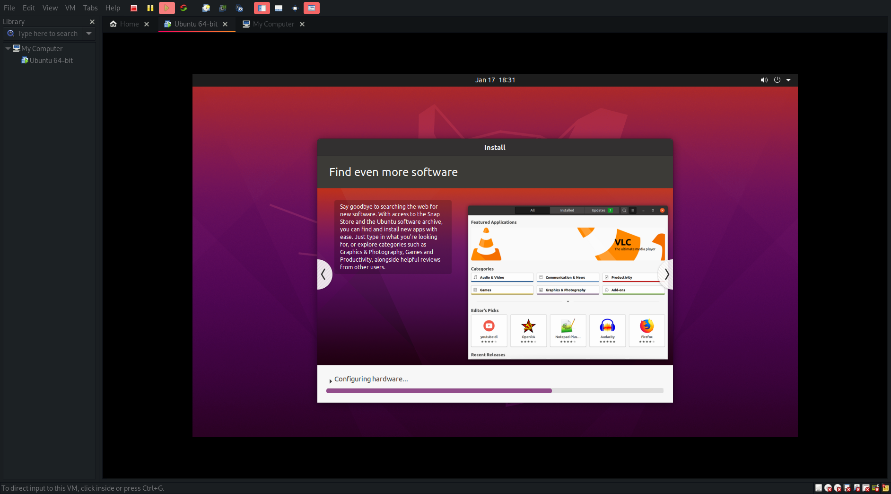
- After its finished setting up in VMWare, the virutal machine will restart and open into:
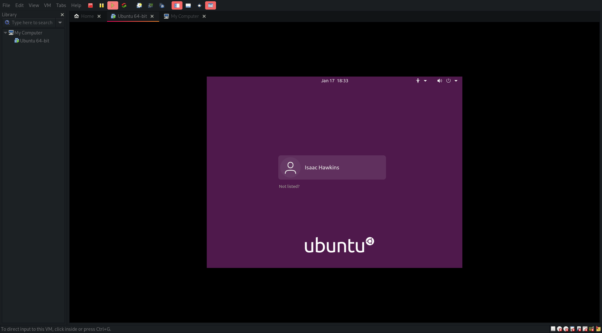
5 Setting up Ubuntu
- For the sake of clarity, I am going to turn the resolution up from 480p so we can see what is going on
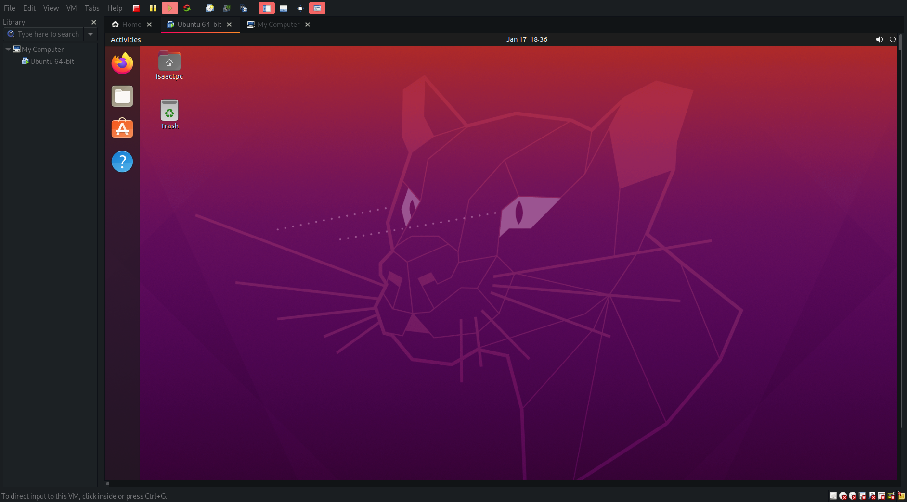
- Now that we're in Ubuntu, lets do a little test to make sure that Networking is working on our VMWare instance
- Open up Firefox (which is included with Ubuntu) and open up http://www.google.com, if you see this screen it means that we are connected to the internet
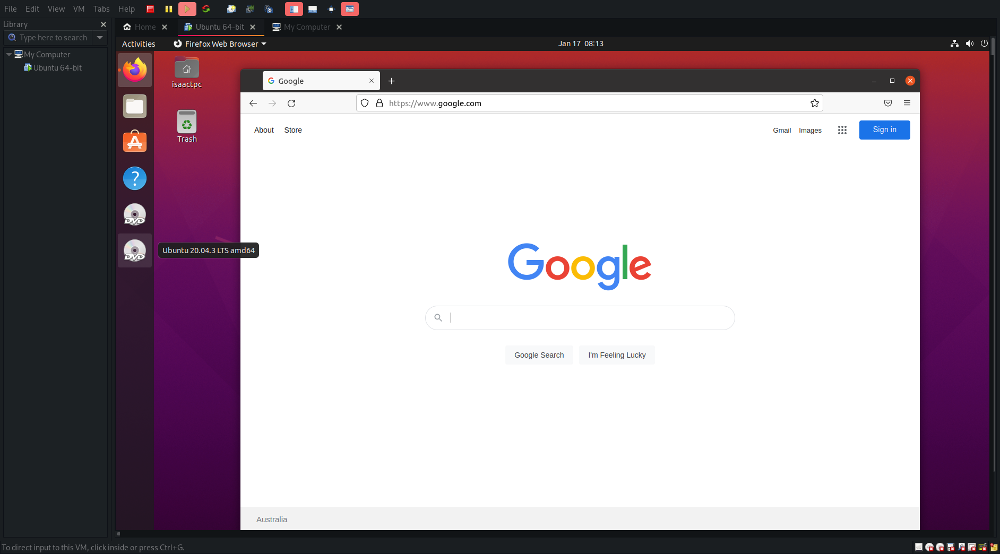
- Now select the button at the top of the screen that says Activities, and search for teminal.
- A terminal Window should now show up on the screen like so: 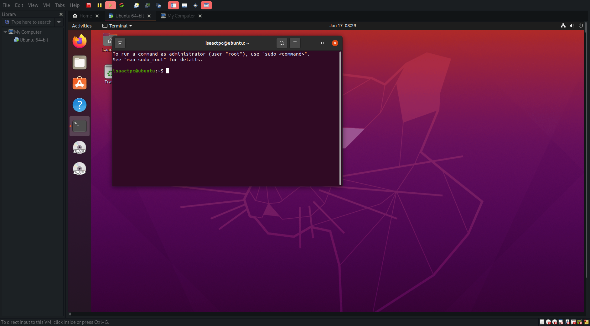
- To make sure the system is up-to-date, we have to run
sudo apt update
- apt is what is known as a package manager
- A package mangager is a tool used by linux admins to make sure that software is installed, kept up to date and mangaged properly
- Package managers allow Linux servers to be configured quickly and easily
- The system will now update apt and make sure we can install whatever packages we need to
- A software updater message will pop up as well but we can ignore that for now
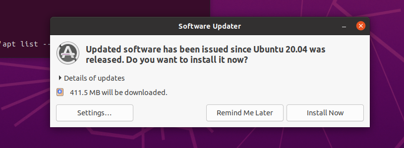
Enter into the terminal
sudo apt install nginx
- This is asking the package mangager to install a package known as nginx
- nginx is what we will be using to host a website off of this virtual machine
- When the package manager asks if you want to continue, Type capital Y, and it will install the nginx to our virtual machine
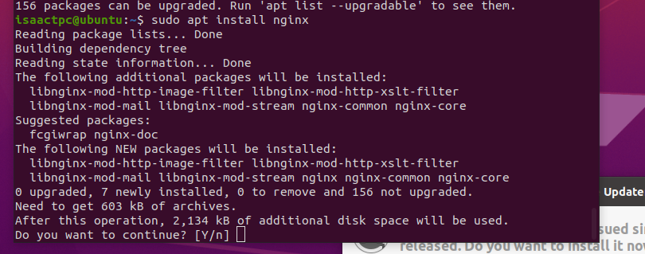
6 Setting up Nginx
- When the installation is done, we will be back at our shell, and we can check that status of ufw with the following command
sudo ufw status
- This command should have the output showing nginx is not active
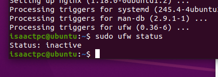
- We can activate nginx with two commands
sudo ufw enable sudo ufw allow 'Nginx HTTP'
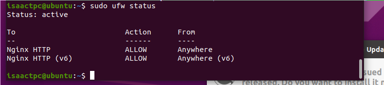
- These commands tell ufw to turn on and allow HTTP connections on port 80
- If we open up firefox again and go to http://127.0.0.1 which is our local host we will see this
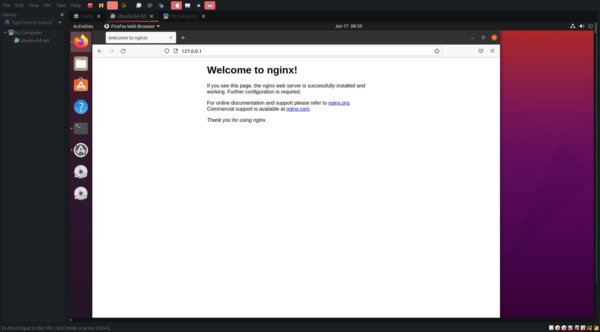
- Now we are offically hosting a webpage on our virtual machine
- To access the webpage from your real machine, type the command ip addr show into the terminal
- There should be an ip address listed under inet
- Open a browser up on your real computer and you should see the exact same page
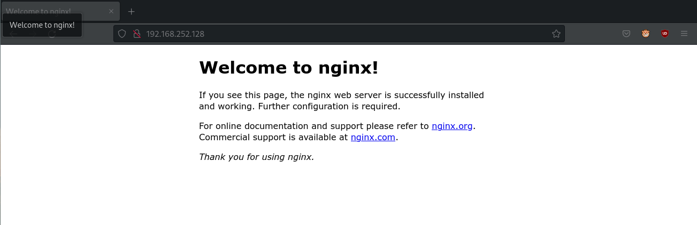
- You are now hosting a site on a linux webserver, meaning by definition you are a Linux Server admin
7 Getting your own site onto NGINX
- Today we are just going to worry about static HTML sites
- Should we prepare a HTML file for them to host
- Make sure your HTML file is called index.html
- In the terminal use cd (change directory) to navigate to the directory with your html files in it
sudo mv *.html /var/www/html/
- * is whats called a wildcard, it can be used to select multiple files matching a condition
- In this case the condition is a file ending in .html
- If you have css, image or any other kinds of files on your website use them as well (*.css, *.png/jpg/gif, *.js for example)
- This copies it to the file where the HTML files for Nginx are kept
- To be safe we will restart Nginx using systemd
- Systemd is a linux utility that is used to manage programs known as damons
- damons are background services that run utilities
sudo systemctl restart nginx
- Now if you go to your website again, you will see it has updated with your page